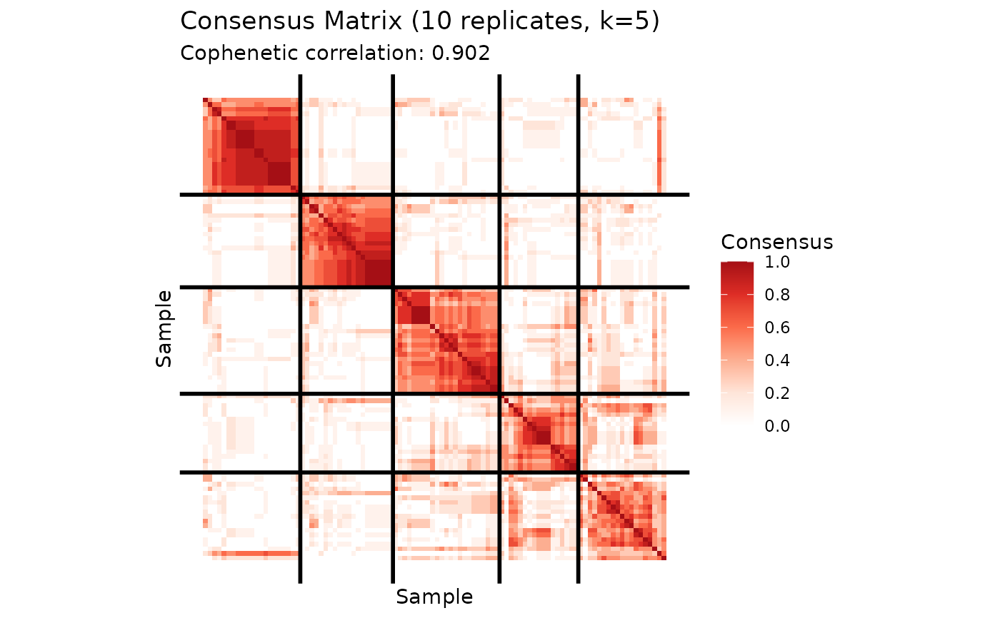
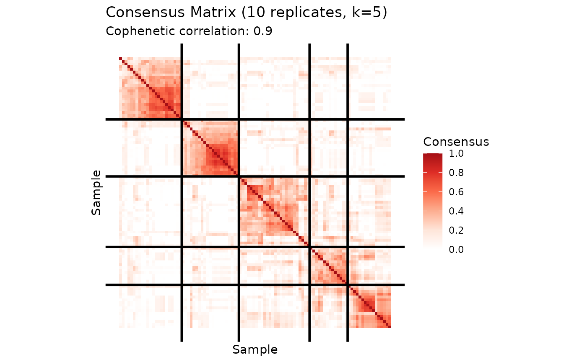

Run multiple NMF replicates and compute consensus matrix showing co-clustering frequency of samples.
Usage
consensus_nmf(
data,
k,
reps = 50,
method = c("hard", "knn_jaccard"),
knn = 10,
seed = NULL,
threads = 0,
verbose = FALSE,
...
)Arguments
- data
input matrix (samples x features for clustering samples)
- k
rank of factorization
- reps
number of replicates (default 50)
- method
consensus method: "hard" for hard cluster assignments (default), or "knn_jaccard" for KNN-based Jaccard overlap of factor loadings
- knn
number of nearest neighbors to use for KNN Jaccard method (default 10)
- seed
random seed for reproducibility
- threads
number of threads for OpenMP parallelization (default 0 = all available)
- verbose
print progress information (default FALSE)
- ...
additional arguments passed to
nmf
Value
List with:
consensus- consensus matrix (samples x samples)models- list of fitted nmf objectsclusters- final cluster assignmentscophenetic- cophenetic correlation coefficientmethod- consensus method used
Details
Consensus clustering runs NMF multiple times with different random initializations.
**Hard clustering method** (method = "hard"): For each run, samples are clustered based on their dominant factor in W. The consensus matrix C[i,j] gives the proportion of runs where samples i and j were assigned to the same cluster. This is the traditional consensus clustering approach.
**KNN Jaccard method** (method = "knn_jaccard"): For each run, the k-nearest neighbors of each sample are computed based on factor loadings (W matrix). The consensus matrix C[i,j] is the average Jaccard similarity between the KNN sets of samples i and j across all replicates. This approach is more robust to ambiguous cluster assignments and captures neighborhood structure rather than hard cluster membership.
High consensus values (near 1) indicate stable co-clustering or neighborhood overlap. Intermediate values suggest ambiguous relationships.
The cophenetic correlation coefficient measures cluster stability - higher values (closer to 1) indicate more stable/reproducible clustering.
Examples
# \donttest{
library(Matrix)
A <- rsparsematrix(100, 50, 0.3)
# Traditional hard clustering consensus
cons_hard <- consensus_nmf(A, k = 5, reps = 10, method = "hard", seed = 123)
# KNN Jaccard consensus (more robust)
cons_knn <- consensus_nmf(A, k = 5, reps = 10, method = "knn_jaccard", knn = 15, seed = 123)
# Plot consensus heatmap
plot(cons_hard)

plot(cons_knn)

# Check cophenetic coefficient (higher = more stable)
print(cons_hard$cophenetic)
#> [1] 0.901777
print(cons_knn$cophenetic)
#> [1] 0.899601
# Get cluster assignments
print(table(cons_hard$clusters))
#>
#> 1 2 3 4 5
#> 23 20 21 19 17
# }